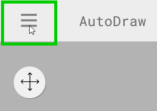
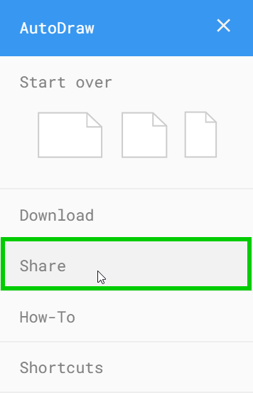
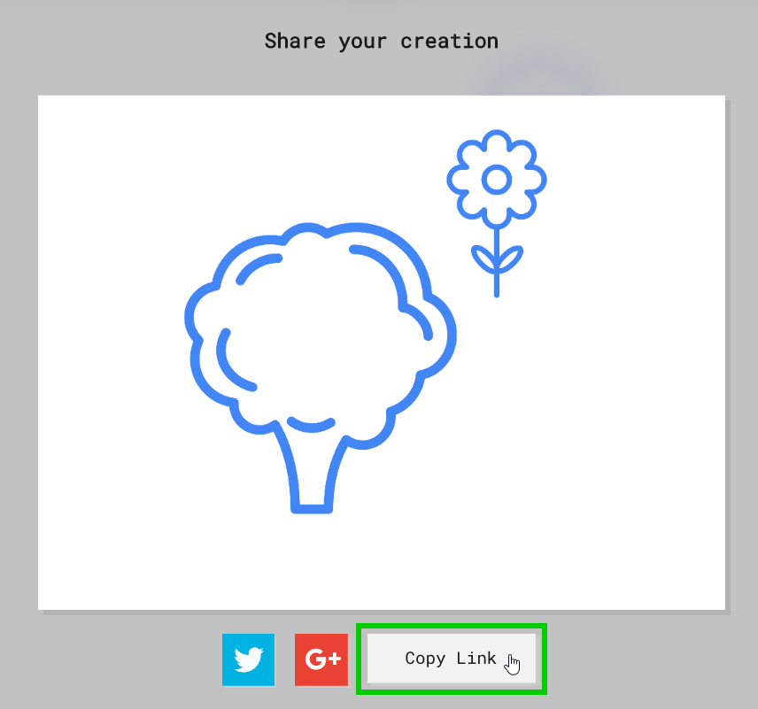

Icebreaker: AutoDraw
For this icebreaker activity, draw a picture using artificial intelligence!
Start Drawing
Follow these steps to start drawing.
- Go to AutoDraw.com
- If there is a canvas with a drawing, click the hamburger menu in the upper left and select one of the blank canvases under "Start over"
- If there is no canvas, click the "Start Drawing" button
- With the "AutoDraw" pencil selected, start drawing something
- The A.I. should start to guess the drawing - check the top bar for suggestions!
- Play around with the drawing until you create something good
- Select different tools
- Change the colors
- Draw multiple objects
- Draw something that means something to you!
Feel free to create anything you'd like!
Sharing
When you're ready to share, follow these steps.
- Click the Hamburger menu in the upper left
 - Select the "Share" option
 - Click the "Copy Link" button
 - Open the submission form: https://forms.office.com/r/zVdcwp9zBd
- On the form, select your room, enter your name, and paste in your link with Ctrl+v or right click -> "Paste"
- Submit the form to send your drawing!